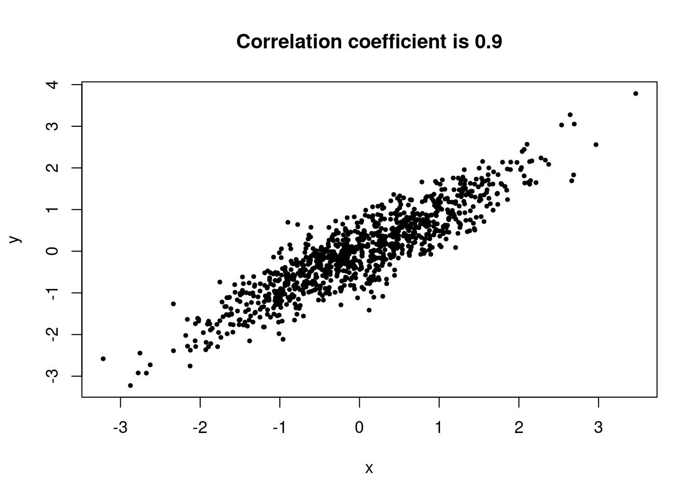
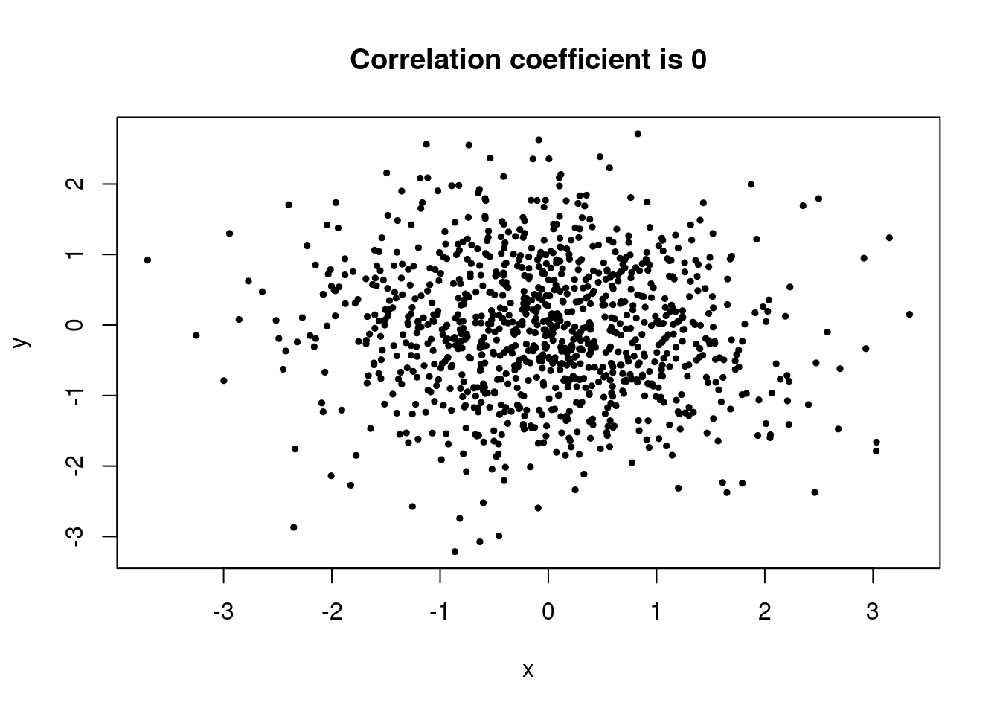
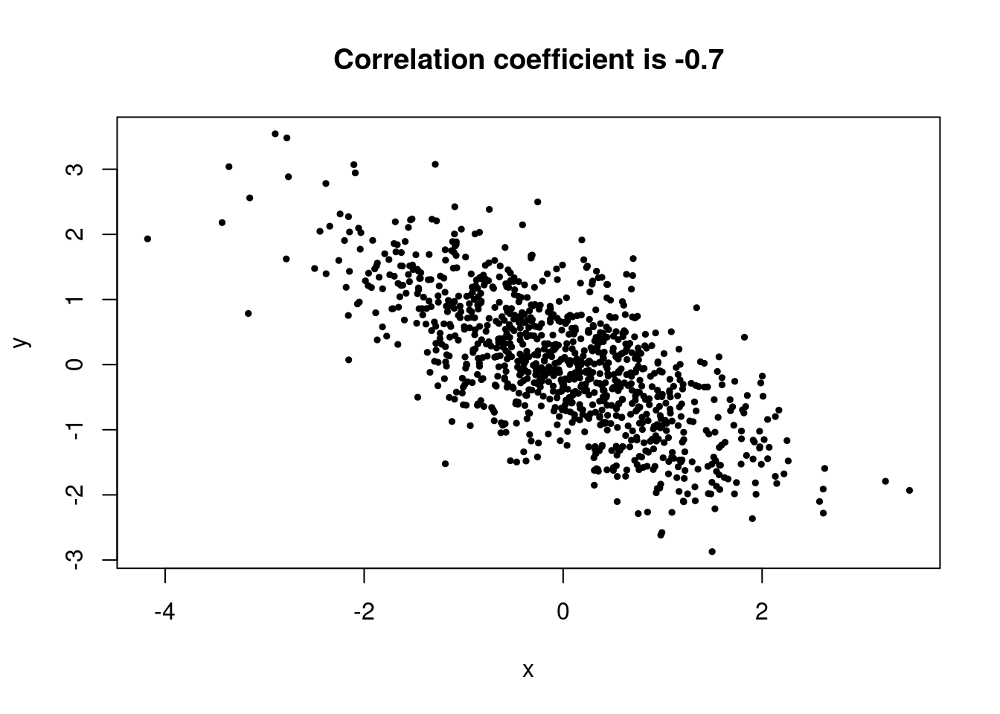
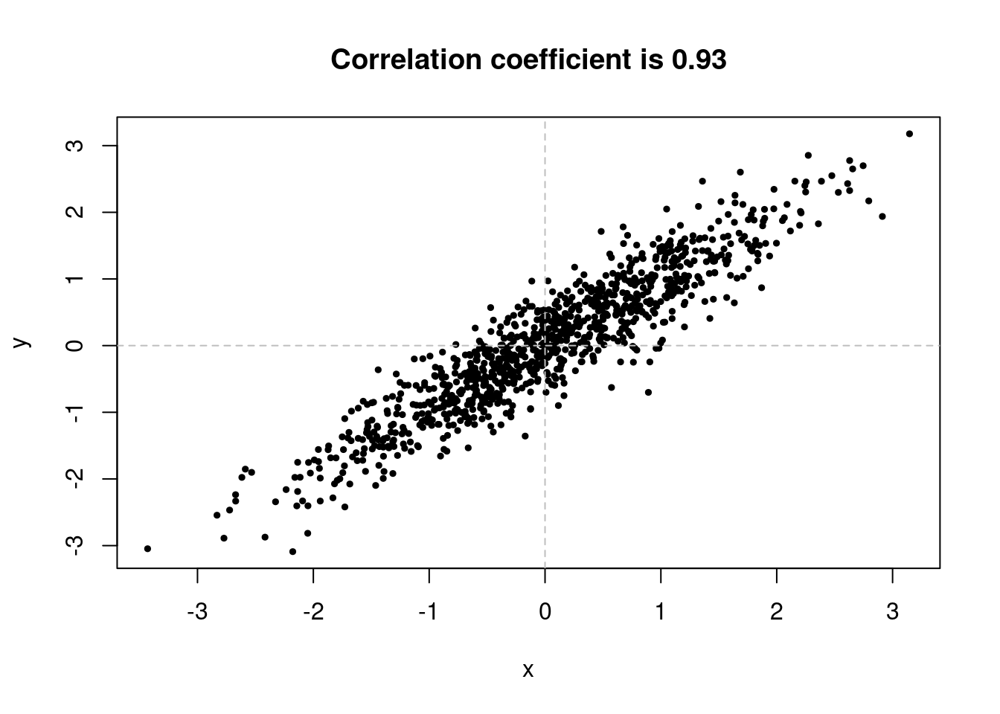
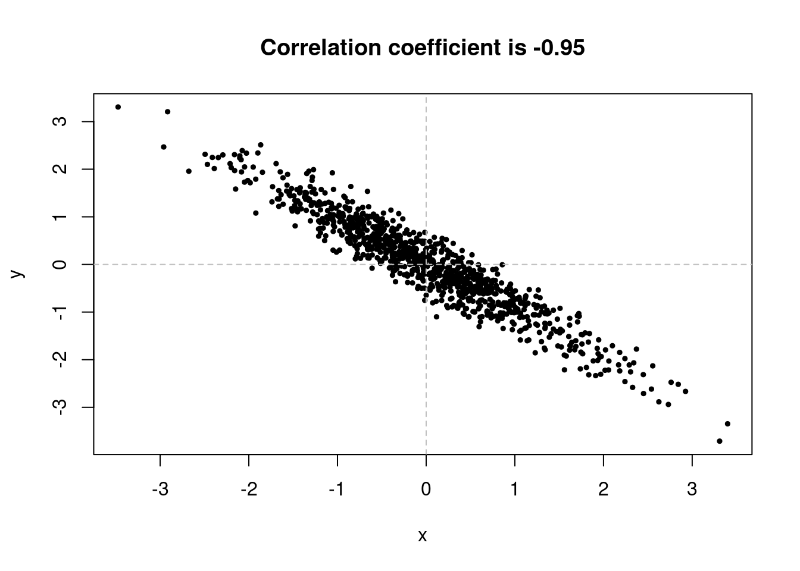
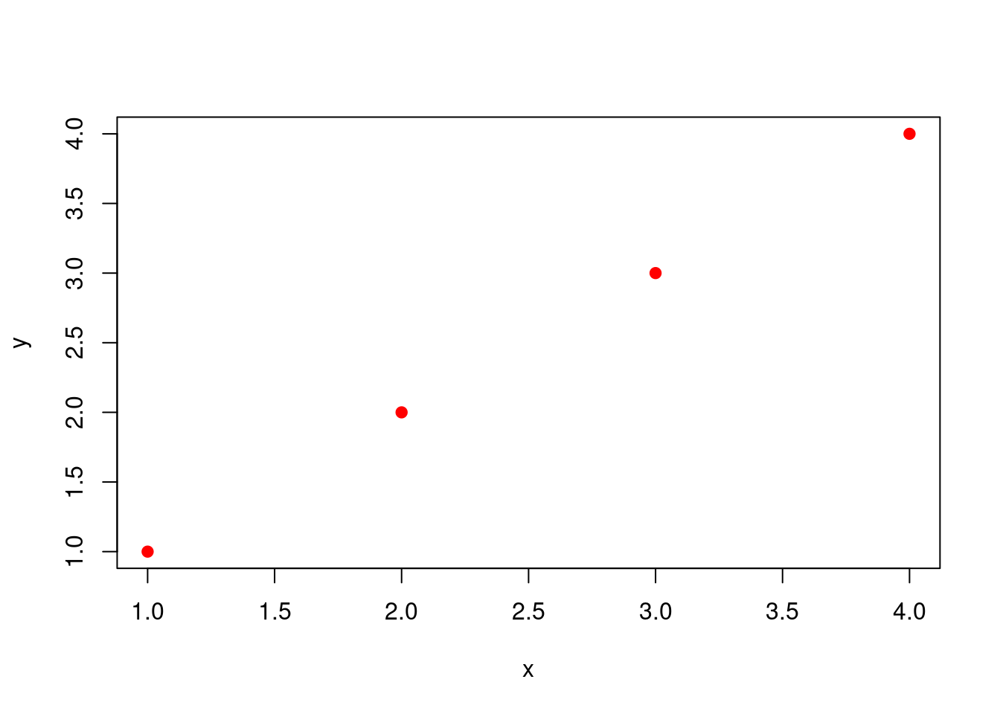

Code
library(JWL)
dat <- pearson
plot(dat,
pch = 19,
cex = 0.3,
xlab = "Father's height (inches)",
ylab = "Son's height (inches)",
main = "Pearson's height data from 1903")
abline(0,1, lty = 2)
We are now ready to learn about the most important statistical tool to describe relationship between variables and to model this relationship. The model of the relationship is the basis for making predictions. After finishing this unit you will have mastered the second core skill taught in this course: Making predictions based on data on past observations.
Correlation: Correlation, expressed by the correlation coefficient measures how tightly a scatterplot is clustered around a straight line. The correlation coefficient is therefore called a measure of linear association. It is usually expressed shorthand as correlation and often abbreviated by the letter \(r\).
Correlation Coefficient: The correlation coefficient \(r\) is the average of the products of the two variables when both variables are measured in standard units or z-scores.
Correlation is not Causation: Correlation establishes how tightly two variables are clustered around a straight line. While a causal story might be the reason for this pattern (x causing y) the pattern does not establish that x causes y in a statistical sense. Detecting a pattern is never sufficient to establish a causal relation between variables.
Regression lines: The regression line for \(y\) on \(x\) estimates the average value for \(y\) corresponding to each value of \(x\).
Slope and Intercept of the regression line: The slope of the regression line is: \(r \,\, \frac{\text{sd}\, y}{\text{sd}\, x}\). The intercept of the regression line is: \(\text{average of}\, y - \text{slope} \times \text{average of}\, x\).
Least squares method: Among all lines, the line that minimizes the root mean square error in predicting \(y\) from \(x\) is the regression line. Moreover the regression line is the only line that minimizes the root mean square error.
lm() function: The lm() function is the R implementation of the least squares method.
predict(): The predict() function allows us to make predictions from a statistical model derived by lm().
We ended the last chapter with Pearson’s historical data on the heights of fathers and sons to introduce the concept of a scatter-plot.
library(JWL)
dat <- pearson
plot(dat,
pch = 19,
cex = 0.3,
xlab = "Father's height (inches)",
ylab = "Son's height (inches)",
main = "Pearson's height data from 1903")
abline(0,1, lty = 2)
We discussed how we could use the positive association in this scatter-plot to predict the height of a son from the height of the father. One intuition might be to use the straight dashed line that runs along the diagonal. If we would use this line - the diagonal - as a model for prediction, each adult son would be predicted to show the same height as his father. But we can do better than that and improve on this choice.
For any straight line we might choose, each data-point will give rise to a residual which is the size of the error were we to use the line as prediction.
plot(dat,
pch = 19,
cex = 0.3,
xlab = "Father's height (inches)",
ylab = "Son's height (inches)",
main = "Pearson's height data from 1903")
abline(0,1, lty = 2)
abline(reg = lm(dat$Son ~ dat$Father), col = "red", lwd = 2)
points(63.1, 74.3, pch = 19, col = "red")
lines(c(63.1, 63.1), c(66.3264, 74.3), col = "red", lty = 2)
Suppose for instance that we took the father with a height of 63.1 inches and predicted the height of the son according to the model described by the red line, we would have predicted the son to have height 66.3 inches. In the data the son of the father with height 63.1 inches is in fact 74.3 inches. This is marked out as the red point in the plot. The length of the dashed line from the red point to the red line is the residual.
The idea of prediction using models of straight lines is to make these residuals small. We will learn a method how to do this. This approach to prediction is called regression and we will learn how it works in this chapter.
In the beginning of this lecture we studied the example of infant mortality. Let us first study a scatter plot which plots the number of children per woman against the infant mortality rate across countries in the world in the year 2000.
library(JWL)
dat <- infant_mortality_data
dat_2000 <- dat[dat$Year == 2000, ]
plot(dat_2000$Children, dat_2000$Mortality,
yaxt = "n",
xlab = "Children per woman",
ylab = "Infant mortality",
pch = 19,
cex = 0.5)
axis(2, at=pretty(dat_2000$Mortality), lab=paste0(pretty(dat_2000$Mortality) * 100, " %"), las=TRUE)
Notice the positive association in the data. The scatter of points is sloping upwards, indicating that a higher number of children per woman tends to go along with a higher infant mortality rate.
Let’s look at another example, where we plot the average years of schooling for women on the x-axis and child mortality1 on the y-axis. Here we see a negative correlation. Child mortality across countries in a given year, here the year 2020, tends to be negatively associated with the average years of schooling of women. In such cases we speak of a negative correlation.
1 Remember from the section on counts and categorical data that child mortality is the rate of children who die before their fifth birthday. Infant mortality in contrast is the rate of children dying before their first birthday.
data <- child_mortality_average_schooling_of_women
data_2020 <- data[data$Year == 2020, ]
plot(data_2020$YEW15, data_2020$MR,
xlab = "Average years of schooling for women",
ylab = "Child mortality",
pch = 19,
cex = 0.5)
The correlation coefficient measures how tightly a scatterplot is clustered around a straight line. The correlation coefficient is therefore called a measure of linear association. It is usually expressed shorthand as correlation and often abbreviated by the letter \(r\).
Here are some mathematical properties of correlation which we will observe by simulation in a next step.
R has a built in function for computing the correlation coefficient. This function is called cor() and takes the \(x\) and the \(y\) values of a scatter plot as arguments. So, for example, take the data on children per woman and infant mortality.
We read the data from the JWLpackage and store them in an object which we call dat.
library(JWL)
dat <- infant_mortality_dataLet’s check the variable names.
names(dat)[1] "Country" "Code" "Year" "Mortality" "Continent"
[6] "Population" "Births" "Deaths" "Children" We filter the data for the year 2000 and store these data in a new object called dat_2000
dat_2000 <- dat[dat$Year == 2000, ]Now we compute the correlation between the average number of children per woman Children and the child mortality rate Mortality, where each data-point corresponds to a particular country around the world.
cor(dat_2000$Children, dat_2000$Mortality)[1] 0.8711762indicating a strong positive correlation.
Now let us use a function, which we call r_scatter to explore how the correlation coefficient shapes a scatter plot. This is an excellent opportunity to refresh our knowledge of how to write your own functions in R.
First, remember that each function is an R object and has a name. We already decided to call the function r_scatter. Then the syntax is to write function() and put the function arguments within the paranthesis.
Here we have two arguments, the correlation coefficient - let us call it according to the convention r - and the number of data points we want to consider. We call this number n and assign a default value to it, let’s say 1000.
Next we have to write the function body between {}. This is the part containing the actual instructions.
First we create two vectors of length \(n\) of values \(x\) and \(z\) from a normal distribution with mean 0 and standard deviation 1. This is achieved by the r function rnorm(n). Note that n is a function argument and since we have set a default value of n, unless specified otherwise R will set n to 1000.
Next we use a mathematical fact, which we do not explain here in detail. When \(x\) and \(y\) have the same standard deviation then the variable \(y\) given by \[\begin{equation}
y = r x + \sqrt{1 - r^2} z
\end{equation}\] will have correlation coefficient \(r\) with \(x\). Thus we can implement this formula in the function body, leaving \(r\) unspecified. It is the function argument of r_scatter and will be specified by you when you call the function with a specific \(r\).
Then we do a scatterplot of \(x\) and \(y\) which is the output of the function. The function will always render the last expression in {} as the output.
This is how the code looks like in its entirety:
r_scatter <- function(r, n = 1000){
x <- rnorm(n) # create n observations from a standard normal distribution
z <- rnorm(n) # create n observations from a standard normal distribution
y <- r*x + sqrt(1-r^2)*z # implement the formula discussed in text.
# do a scatter plot of x and y
plot(x,y,
xlab = "x",
ylab = "y",
main = paste(c("Correlation coefficient is", r), collapse = " "),
pch = 19,
cex = 0.5)
}Now we call r_scatter a few times to see what the correlation coefficient does.
r_scatter(0.9)
r_scatter(0.25)r_scatter(0)
r_scatter( -0.7)
r_scatter(- 0.98)How does cor() compute the correlation coefficient? We do not give a mathematical derivation here. One way to explain the computation is to say that
\(r\) is the average of the products of the two variables when both variables are measured in standard units or z-scores.
Let’s do a simple example in R to explain the computation. Consider the follwoing toy data
x <- c(1,3,4,5,7)
y <- c(5,9,7,1,13)
knitr::kable(data.frame(x,y))| x | y |
|---|---|
| 1 | 5 |
| 3 | 9 |
| 4 | 7 |
| 5 | 1 |
| 7 | 13 |
To convert into standard units we have to subtract the mean from each observation and divide by the standard deviation. You should be able to verify for yourself that the mean of \(x\) is 4 and the standard deviation is 2 and for \(y\) the corresponding values are 7 and 4.
Doing this operation on the values in our table will give us:
knitr::kable(data.frame(x,y, x_su = (x - mean(x))/(sd(x)*sqrt(4/5)), y_su = (y- mean(y))/(sd(y)*sqrt(4/5))))| x | y | x_su | y_su |
|---|---|---|---|
| 1 | 5 | -1.5 | -0.5 |
| 3 | 9 | -0.5 | 0.5 |
| 4 | 7 | 0.0 | 0.0 |
| 5 | 1 | 0.5 | -1.5 |
| 7 | 13 | 1.5 | 1.5 |
Finally we have to add the product of the standardized values \(x_{su}\) and \(y_{su}\) to get
knitr::kable(data.frame(x,y, x_su = (x - mean(x))/(sd(x)*sqrt(4/5)), y_su = (y- mean(y))/(sd(y)*sqrt(4/5)), xy_su = (x - mean(x))/(sd(x)*sqrt(4/5))*(y- mean(y))/(sd(y)*sqrt(4/5))))| x | y | x_su | y_su | xy_su |
|---|---|---|---|---|
| 1 | 5 | -1.5 | -0.5 | 0.75 |
| 3 | 9 | -0.5 | 0.5 | -0.25 |
| 4 | 7 | 0.0 | 0.0 | 0.00 |
| 5 | 1 | 0.5 | -1.5 | -0.75 |
| 7 | 13 | 1.5 | 1.5 | 2.25 |
Taking the average across these values gives \(r\). Thus we get \[\begin{equation} \frac{0.75-0.25+0.00-0.75+2.25}{5} = 0.40 \end{equation}\]
Now check this against cor():
cor(x,y)[1] 0.4Let’s do a scatter plot of the data:
plot(x,y)
grid(nx = 2, ny = 2,
lty = 2, col = "gray", lwd = 2)
par(new = TRUE)
plot(x,y,
xlab = "x",
ylab = "y",
main = "Scatter plot toy example",
pch = 19,
col = 4)
text(x = 4.1, y = 6.6,
label = "0")
text(x = 3, y = 8.4,
label = "-0.25")
text(x = 1, y = 4.4,
label = "0.75")
text(x = 5, y = 1.6,
label = "-0.75")
text(x = 7, y = 12.4,
label = "2.25")
text(x = 2.5, y = 10,
label = paste(c("-", "-", "-", "-")), cex = 4)
text(x = 5.5, y = 10,
label = "+", cex = 4)
text(x = 5.5, y = 4,
label = paste(c("-", "-", "-", "-")), cex = 4)
text(x = 2, y = 4,
label = "+", cex = 4)In this plot the \(x\) axis and the \(y\) axis show the values of the original table and in the plot we associate the values of the product of standardized units in the plot. The dashed lines are plotted through the points of averages, dividing the scatter plot into four quadrants. If a point is in the lower left quadrant both variables are below average and are negative in standard units. So their product is positive. In the upper right quadrant the product of two positives is positive. In the remaining two quadrants the product of a positive and a negative is negative.2 The average of all these products is the correlation coefficient.
2 For those of you who need a refresher about the algebra of multiplying positive and negative numbers, you might resort to the following intuition: \(3 \times 5 = 15\): Getting 5 Dollars 3 times gives you 15 Dollars. \(3 \times (-5) = -15\): Paying a 5 Dollar penalty 3 times gives you a 15 Dollar penalty. \((-3) \times 5 = -15\): Not getting 5 Dollars 3 times is not getting 15 Dollars. $(-3) (-5) = 15: Not paying a 5 Dollar penalty 3 times is getting 15 Dollars.
If \(r\) is positive, then points in the two positive quadrants will predominate as for example here
r_scatter(r = 0.93)
# Vertical grid
abline(v = 0,
lty = 2, col = "gray")
# Horizontal grid
abline(h = 0,
lty = 2, col = "gray")
If \(r\) is negative points in the two negative quadrants will dominate as for example here.
r_scatter(r = -0.95)
# Vertical grid
abline(v = 0,
lty = 2, col = "gray")
# Horizontal grid
abline(h = 0,
lty = 2, col = "gray")
Note that the way correlation as a measure of linear association makes \(r\) sensitive to outliers. Consider the following example from Adhikari, DeNero, and Wagner. Let’s assume we have a scatter plot like this
x <- c(1:4)
y <- c(1:4)
plot(x,y, col = "red", pch = 19)
The correlation coefficient here is 1, since the points are all exactly on a line. Now assume we add a fifth point, like this - an outlier.
x <- c(1:4, 5)
y <- c(1:4, 0)
plot(x,y, col = "red", pch = 19)Now the correlation \(r\) is 0. So a perfect correlation is changed to no correlation by just adding one single outlying point.
From these observations we can observe three properties of \(r\)
\(r\) is a measure of clustering along a line. This is often referred to by calling \(r\) a measure of linear association. Note that data are often associated in other ways not necessarily along a line. In such cases \(r\) would show a weak association only.
As one real world examples let us take the relation between the share of extremely poor people across countries in the world in a given year versus GDP per capita in that same year. Here we take the year 2015. This is what we get.
library(JWL)
# remove World, which should not be there and Luxembourg which is an extreme outlier
data_2015 <- poverty_vs_gdp[(poverty_vs_gdp$Year == 2015 &
!(poverty_vs_gdp$Entity %in% c("World", "Luxembourg"))), ]
options(scipen = 999)
plot(data_2015$GDPpc, data_2015$Share,
xlab = "GDP per capita",
ylab = "Share in extreme poverty",
main = "Share of population living in extreme poverty vs. GDP per
capita, 2015",
pch = 19,
cex = 0.5,
xaxt = "n",
yaxt = "n")
axis(1, at = c(0, 20000, 40000, 60000, 80000),
labels = paste0(c("0", "20.000", "40.000", "60.000", "80.000"), " ", "$"), cex.axis = 0.9)
axis(2, at = c(0, 10, 20, 30, 40, 50, 60),
labels = paste0(as.character(c(0, 10, 20, 30, 40, 50, 60)), " ", "%"), cex.axis = 0.9)You can see that the data show a strong association between GDP per capita and the share of extreme poverty, which is intuitive. Moreover this association is not along a straight line.
If we would compute the correlation coefficient in these data, we would get a value of -0.4532214, a weak negative association.
In the following picture we show the data with smooth curve that approximates the shape of the data in red. Had we fitted a straight line to these data, you can see from the picture that the fit is poor. Though there seems to be a relatively strong association between GDP per capita and the share of people living in extreme poverty, it is not a linear association, i.e. an association along a straight line. The correlation coefficient only captures the clustering of data points along a straight line.
df <- data.frame(x = data_2015$GDPpc, y = data_2015$Share)
plot(df$x, df$y,
xlab = "GDP per capita",
ylab = "Share in extreme poverty",
main = "Share of population living in extreme poverty vs. GDP per
capita, 2015",
pch = 19,
cex = 0.5,
xaxt = "n",
yaxt = "n")
axis(1, at = c(0, 20000, 40000, 60000, 80000),
labels = paste0(c("0", "20.000", "40.000", "60.000", "80.000"), " ", "$"), cex.axis = 0.9)
axis(2, at = c(0, 10, 20, 30, 40, 50, 60),
labels = paste0(as.character(c(0, 10, 20, 30, 40, 50, 60)), " ", "%"), cex.axis = 0.9)
mod <- lm(y ~ x, data = df)
lines(stats::lowess(df, f= 1/7), lw = 2, col= "red")
abline(mod, col = 4, lw = 2)In the discussion of correlations we need to come back to an issue we had discussed in a previous lecture. It is important to keep in mind that correlations measure linear association between two variables but association is not the same as causation.
Let me come back to an example we discussed earlier in section 3, where we looked at the correlation between average learning outcomes and total education expenditure by per capita documented in the study by Larry Hedges (1994)
library(JWL)
plot(expenditure_outcome_dat$Expenditure,
expenditure_outcome_dat$Outcome,
main = ("Average learning outcomes by total education expenditure per capita"),
xlab = ("Public and private per capita expenditure on education (PPP, constant 2011-intl $)"),
ylab = ("Average harmonized learning outcome in 2005 - 2015"), pch = 16)
axis(1, at = seq(500, 3500, by = 500))
mod <- lm(Outcome ~ Expenditure, data = expenditure_outcome_dat)
abline(mod, col = 4, lw = 2)The correlation in these data is 0.5684246. But does this evidence does not support the conclusion that there is a causal relation between increased educational spending and student outcomes. Comparing outcomes of students across countries or students across schools with different levels of spending does not tell us whether the different spending levels are causal for the variation in outcomes we observe. There may be many other differences between countries and students that are shaping this relationship.
The previous example shows a case of correlations based on averages. We have seen by now various examples of such correlations. Correlations based on averages can be frequently found in social sciences such as sociology, political science or economics. However these correlations have to be assessed with care because they can overstate the strength of an association.
Let me illustrate this point by a hypothetical example. Many studies have looked at the association between individual education and individual income, claiming a positive association between the level of education and individual income. Suppose a survey had collected data on income and education for individuals in three countries, labelled by three colors: Country red, country orange and country blue. Each individual is marked by one color symbolizing it’s country of residence. Let’s do not worry about the exact units. Say education is measured by some form of time of education and income in some monetary unit.
set.seed(12) # set the random number generator seed
x <- 0:24
y <- 1153*x + rnorm(25, 20000, 8000) # create the toy data of duration of edcuation and income
df <- data.frame(Education = x, Income = y) # write into dataframe
df$State <- with(df, ave(seq_along(Income), Income, FUN = function(x)
sample(c("Red", "Blue", "Orange"), size = length(x), replace = TRUE, prob = c(1/3, 1/3, 1/3)))) |> as.factor() # asign colors as factors to the education and income combination
color_pallete_function <- colorRampPalette(
colors = c("red", "orange", "blue"),
space = "Lab" # Option used when colors do not represent a quantitative scale
) # define a state by a color
num_colors <- nlevels(df$State)
df_state_state <- color_pallete_function(num_colors)
# Do the exercise for state averages
col1 <- tapply(df$Education, df$State, mean)
col2 <- tapply(df$Income, df$State, mean)
df_avg <- data.frame(Education = col1, Income = col2, State = as.factor(names(col1)))
num_colors_avg <- nlevels(df_avg$State)
df_state_state_avg <- color_pallete_function(num_colors_avg)
# plot side by side
par(mfrow = c(1,2))
# plot for individual values
plot(
x = df$Education,
y = df$Income,
xlab = "Individual education",
ylab = "Individual income",
pch = 20, # solid dots increase the readability of this data plot
col = df_state_state[df$State],
xaxt = "n",
yaxt = "n")
# plot for aggregated values
plot(
x = df_avg$Education,
y = df_avg$Income,
xlab = "Country average education",
ylab = "Country average income",
pch = 20, # solid dots increase the readability of this data plot
col = df_state_state_avg[df_avg$State],
xaxt = "n",
yaxt = "n"
)In the averaged data the correlation increases from 0.848 to 0.996 or by about 17.5 %. So bear in mind that, while correlations based on averages are frequently encountered in the press, in reports and in the research literature, they tend to overstate the strength of an association.
The correlation coefficient does not only measure the strength of linear association along a line, it also helps us identifying this line. In order to help you discover this, let us go back to the Pearson data on the height of fathers and sons, we used in the beginning of this chapter.
library(JWL)
dat <- pearson
plot(dat,
pch = 19,
cex = 0.3,
xlab = "Father's height (inches)",
ylab = "Son's height (inches)",
main = "Pearson's height data from 1903")
abline(0, 1.036765, lty = 2, col = 4, lwd = 2)
abline(v = 67.69 + 2.75 - 0.5, lty = 2)
abline(v = 67.69 + 2.75 + 0.5, lty = 2)
points(70.44, 70.12, pch = 19, col = "red")
points(73.19, 71.56, pch = 19, col = "red")
points(62.19, 65.8, pch = 19, col = "red")
mod <- lm(Son ~ Father, data = dat)
abline(mod, col = "red", lwd = 2)The summary statistics of the data are:
data_father_son <- data.frame(Father = round(c(mean(dat$Father), sd(dat$Father)),2),
Son = round(c(mean(dat$Son), sd(dat$Son)),2), row.names = c("Mean", "Standard Deviation"))
knitr::kable(data_father_son)| Father | Son | |
|---|---|---|
| Mean | 67.69 | 68.68 |
| Standard Deviation | 2.75 | 2.82 |
The correlation coefficient is \(r\) = 0.501.
The dashed blue line in the picture is the line starting at 0 and increasing with the slope given by the standard-deviation of the father’s height - 2.82 - divided by the standard deviation of the son’s height - 2.72. This is a slope of approximately 1. The vertical strip with the dashed black lines show the fathers who were one standard deviation above average - 70.44 to the nearest inch, i.e. plus minus 0.5 inches. You can see that most of the points in this vertical strip are below the dashed red line. This means that most of the son’s whose father’s were 1 standard deviation above average were less than a standard deviation above average. The average height of the sons is only a fraction of a standard deviation above the average height. This is where the correlation coefficient \(r\) = 0.51 comes in. Associated with an increase of one standard deviation in height by the father is and increase of only 0.51 standard deviations in height of the son on average.
Take the father whose height is one standard deviation above average: 67.69 + 2.75 = 70.44 in. The average height of their sons will be above average by 0.51 standard deviations of their height, or \(0.51 \times 2.82\), which is \(1.44\). So the average height of a son is \(68.68 + 1.44\) The point \((70.44, 70.12)\) is marked by a red dot in the figure.
Now let’s look at the father’s who are two standard deviations above the average height: \(67.69 + 2 \times 2.75\) which is \(73.19\). The average height of their sons should be above \(2 \times 0.51\) of their height, or \(1.02\) standard deviations of height. That is \(1.02 \times 2.82\) or \(2.88\). That is their average height is around \(68.68 + 2.88\) or \(71.56\). We mark the point \((73.19, 71.56)\) also as a red dot in our picture.
What about those who are 2 standard deviations below the average? Their height is \(67.69 - 2 \times 2.75\), which is \(62.19\). The average height of the sons is then about \(68.68 - 2.88\) or \(65.8\). We also mark the point \((62.19, 65.8)\) by a red dot.
Now all points that combine the father’s height with the estimate of the average height of the son fall on the solid red line which connects the red dots. This line is called the regression line. The line goes through the points of averages. Fathers with average heights should have sons with average height.
The regression line for \(y\) on \(x\) estimates the average value for \(y\) corresponding to each value of \(x\).
The method with which we have estimated this line is called the regression method. It associated in our example with each increase in one standard deviation in height by the father an increase of \(0.51\) standard deviations of the son. More generally:
Associated with each increase of one standard deviation in \(x\) there is an increase of only \(r\) standard deviations in \(y\) on average.
From our picture and the discussion we can also learn how the regression line can be described mathematically:
When the variables \(x\) and \(y\) are measured in standard units, the regression line for predicting \(y\) based on \(x\) has slope \(r\) and passes through the origin. Thus the regression equation can be written as \[\begin{equation*} \text{estimate of} \, y = r x \, \text{when both variables are measured in standard units} \end{equation*}\]
When we write this equation not in standard units but in the original units of the data, this equation becomes \[\begin{equation*} \frac{\text{estimate of} \, y - \text{average of } \,y}{\text{sd of} \,y} = r \,\, \frac{\text{given} \, x - \text{average} \, x}{\text{sd of} \, x} \end{equation*}\]
This means, we have:
Finding a regression line is a standard problem often encountered in statistics either to make predictions, when you run controlled experiments or to describe the data you see for a given population.
In the previous section we have explained how a regression line for a scatter plot can be found. In our discussion we followed the path how the regression line was historically detected by the pioneers of statistics.
In current practice the regression line is usually determined in another way. When the points in a scatter plot seem to follow a straight line, we could ask the question which line fits the points best.
Let’s go back to the graph discussed in the very beginning:
library(JWL)
dat <- pearson
plot(dat,
pch = 19,
cex = 0.3,
xlab = "Father's height (inches)",
ylab = "Son's height (inches)",
main = "Pearson's height data from 1903")
abline(0,1, lty = 2)
abline(reg = lm(dat$Son ~ dat$Father), col = "red", lwd = 2)
points(63.1, 74.3, pch = 19, col = "red")
lines(c(63.1, 63.1), c(66.3264, 74.3), col = "red", lty = 2)
points(71.1, 66.3, pch = 19, col = "red")
lines(c(71.1,71.1), c(66.3, 70.4384), col = "red", lty = 2)Any straight line drawn through this point cloud will be near to some points and farther from others. One such distance from the line to a particular point is marked in the graph by a red dot. When we move the red line around, we will get closer with the line to some points and farther from others.
This conflict can be resolved in two steps: First define an average distance of all the points to the line. Second, move the line around until this average distance is as small as possible.
When \(x\) is used to predict \(y\) the error at each point is the vertical distance of the point to the line, like in our graph. Now, some distances will be positive, some will be negative, so to minimize the average distance, you can not just add the distances because negative and positive values will cancel each other. Instead statisticians take the square of these distances, because the square will always be positive, no matter, whether the distance has a negative or positive value. This square of the distances is also known as the root mean square error.
Among all lines, the line that minimizes the root mean square error in predicting \(y\) from \(x\) is the regression line. Moreover the regression line is the only line that minimizes the root mean square error.
lm() functionRegression is such an important topic and basic tool in statistics, that every software package has built in functions, to help you compute the regression line. In R this function is called lm() for linear model. As usual with functions, lm() takes arguments.
The first argument is of a type we did not encounter before. It is called in R a formula and has the following syntax. Suppose we want to fit a linear model \[\begin{equation}
y = k x + d
\end{equation}\] to our height data. \(y\) is the vector of the father’s heights and \(x\) is the vector of the son’s heights. The intercept of this line with the \(y\) axis is \(d\). To tell R that this is our formula we write name of y ~ name of x.
Let me explain. Here in our discussion we stored the data in a dataframe which we called dat. This dataframe has two variables, which we called Father and Son. Now the formula we need to give to lm needs to be called in this case Son ~ Father.
Where is the constant \(d\) in this formula? lm() automatically assumes that there is an intercept term. This has not to be specified in particular when passing the formula to lm(). The second argument you need to give to lm() is the data. This is called in our case dat.
So now we have the syntax:
lm(Son ~ Father, data = dat)
Call:
lm(formula = Son ~ Father, data = dat)
Coefficients:
(Intercept) Father
33.893 0.514 The output shows the value of the intercept \(d = 33.893\) and the slope \(k = 0.514\). Let’s briefly check how this fits together with your discussion of the regression line. The correlation, the standard deviation of the son’s height and the standard deviation of the father’s height determine the slope \(k\)
r <- cor(dat$Father, dat$Son)
SDF <- sd(dat$Father)
SDS <- sd(dat$Son)
r*SDS/SDF[1] 0.5140059which is indeed the slope of the regression line.
For the intercept we derived:
mean(dat$Son) - r*mean(dat$Father)[1] 34.76212which is the (almost) the same as the value of the intercept computed by lm().
Assume we would like to plot the regression line together with a scatter-plot of the data. We would first store the output of lm() in an object, let us call this object mod for model
mod <- lm(Son ~ Father, data = dat)Then plotting the scatter plot together with the regression line can be done as follows:
plot(dat$Father, dat$Son,
pch = 19,
cex = 0.3,
xlab = "Father's height (inches)",
ylab = "Son's height (inches)",
main = "Pearson's height data from 1903") # Syntax for the scatter plot
abline(mod, col = "red", lwd = 2) # syntax for the regression lineWe first draw the scatter plot using the R plot()function. The arguments pch and cex control the type and size of the dots and xlab, ylab and main control the lables of the x-axis, the y-axis and the main plot.
Then we give the output of lm() the function abline() and tell abline()that the color of the line should be red and the line width should be 2. That’s it.
predict() functionFinally, let us briefly show you an R function which helps you to check the predictions made by the linear model of the regression line using the built in function predict().
Note that our regression line was computed as \[\begin{equation}
\text{Son's height} = 0.51 \times \text{Father's height} + 33.89
\end{equation}\] Now assume you want to make predictions for the height of the son based on the height of the father using this linear model. In this case this is easy to compute by hand but for many values (and even for few) this step can be automated using the predict()function of R. predict()needs as arguments the output of lm() plus a dataframe of new data.
We have already stored the output of lm()in our object mod. Now define some new data and then give the model and the new data to the predict()function:
newdata <- data.frame(Father = c(60, 70, 80))
predict(mod, newdata) 1 2 3
64.73316 69.87321 75.01327 So what predict does for you in one step is to compute for example for the value 80
0.514 *80 + 33.893[1] 75.013Look at the following four data sets. Rank them from weakest to strongest correlations.
Studies find a negative correlation between hours spent watching television and scores on reading tests. Does watching television make people less able to read? Discuss briefly.
The correlation between height and weight among men 18-74 in the US is about 0.40. Say whether each conclusion follows from the data, explain your answer:
When we calculate the correlation coefficient, why do we convert data to standard units?
Write a function called convert_su which takes in a dataframe of elements called data and returns a dataframe of the values represented in standard units. To do a specific computation with the function take the dataset pearson from the JWLpackage. These are the data we used in the lecture.
Write a function called calculate_correlation which takes in a dataframe which is the output of convert_su and returns the correlation coefficient. Again test your function with the pearsondataset from the JWL package.
Load the advertising dataset from the JWL package. The data show 200 samples of advertising expenditures via different advertising channels, TC, radio and newspaper as well as revenues from sales.
Visualize the association between advertising expenditures and the value of sales for each advertising channel. Interpret the graphs in your own words.
Compute the correlation between advertising expenditures and sales for the different advertising channels.
Build a linear model between advertising expenditures via TV and sales and display a scatterplot of the data as well as the regression line. Use lm() to compute the intercept and the slope of the regression line.
Predict the sales from the model if we spend 0 on TV advertising? What are the predicted sales if we spend 300 on advertising?